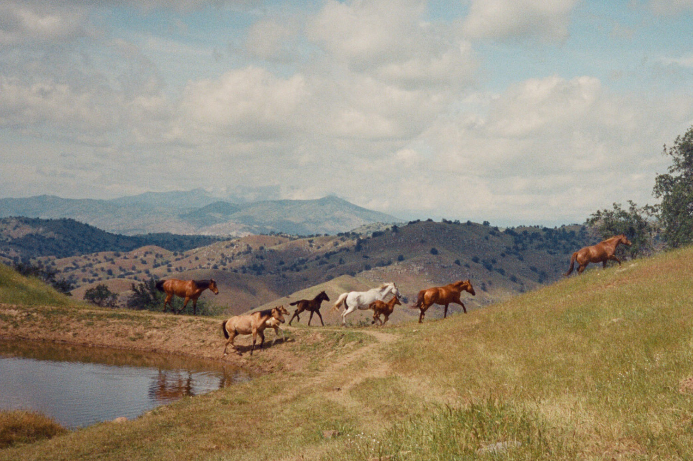
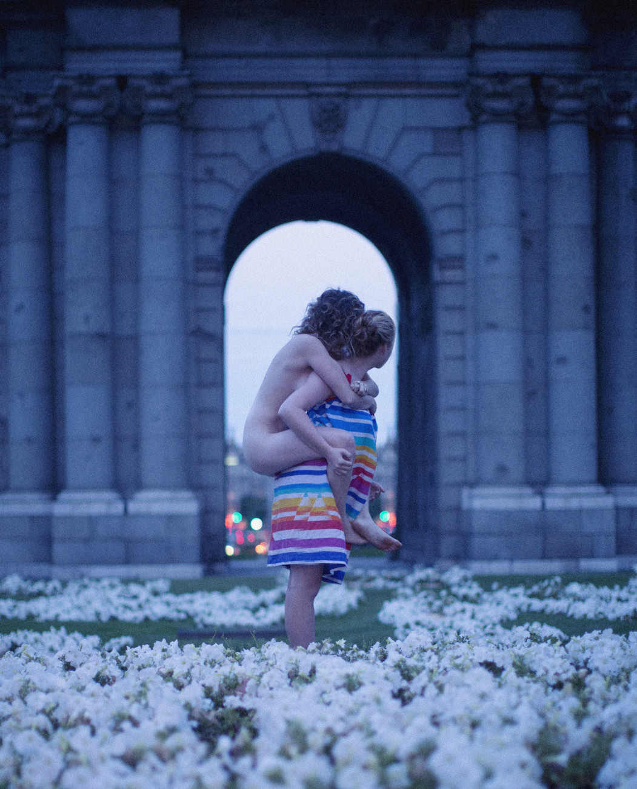
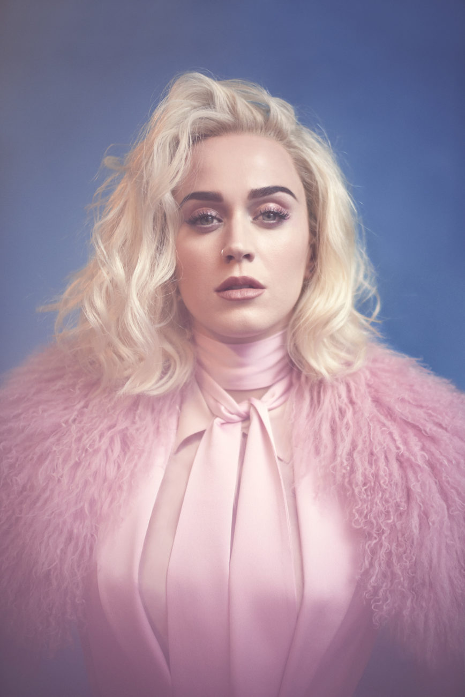
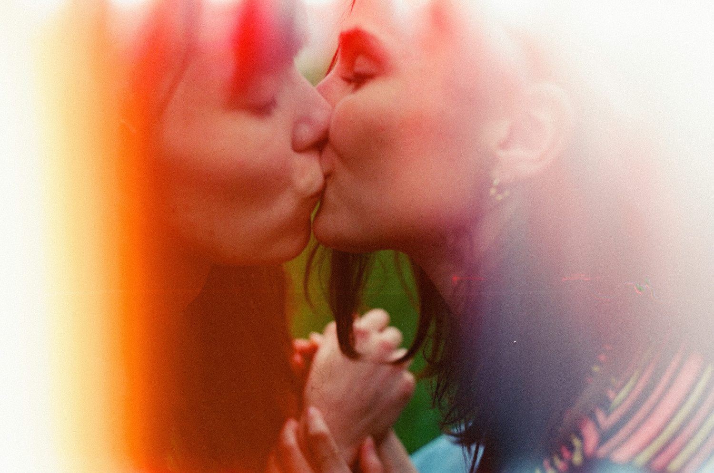

Olivia Bee
Photographer, Director
Olivia Bee is a photographer and director from Portland, Oregon, currently based in Los Angeles. When she was 15, her work was “discovered” by Converse after they saw her photos on Flickr. She has since done editorial work for the New York Times, Harper’s, Der Speigel, Seventeen, and others. She’s done commissioned work for Katy Perry, MTV, YouTube Music, and others, and has been featured in both solo and group exhibitions. In 2016, Aperture published her first book of photography, Kids in Love. It features an interview with Tavi Gevinson. In Bee’s own words, she is “intrigued by the beauty of everyday life and how the beauty of memories (real or imagined) touches us.” Here she discusses the difference between personal and commercial work, how to create the ideal studio, and the nature of healthy creative validation.
From a conversation with Brandon Stosuy
July 14, 2017
Converse spotted your work on Flickr when you were 15. How do you think it’s best to distinguish yourself now, when everyone’s constantly taking pictures?
It comes from taking a lot of pictures and figuring out your voice. It’s not even figuring out what your voice is. If you take pictures of things you like, do what you want to do, and photograph what you love and what you desire to see in the world or what you appreciate in the world, then you will develop a voice. I hear this thing a lot about “finding your voice.” Finding your voice is a counterproductive way to encourage people to photograph what they love. I think you just photograph what you love and your voice will come from that.
As far as getting your stuff out there, I’m definitely an anomaly. My story is lucky. I know I would be doing this anyway, even if Converse didn’t find my work when I was 15, but I’m not sure it would’ve happened so quickly. I’ve always been a very forward-geared person, and have always been thinking about the next step or what I’m doing now and how that can translate into other things, while still being present.
I was 12 when Flickr came out. That’s when good photographers were on Flickr. I think good photographers are still on Flickr, though I’m not really sure. It’s more Instagram now. The way I did it was I just put a bunch of shit on the internet and then shamelessly self promoted it… You kind of have to do that. First you have to focus on photographing what you love and figuring out how that translates, but I would just say take a lot, a lot, a lot of pictures and then don’t be afraid to put them everywhere. Do whatever you need to do to do what you want to do.

Was your family supportive of your early success? Or, was it more like, “Hey, this could be a one time thing. Let’s keep this in check.” How did you keep yourself from getting too caught up in it, but also have the ambition to make the most of it?
This is a lot of what we’re talking about in therapy right now. My family was supportive, and in my gut, I knew this wasn’t a onetime thing. I knew as soon as I was taking pictures that this was going to be okay. I’ve always expressed myself through making things through art. I have to process my life through making something about it—that’s been me since I was age zero.
I was into sculpture for like 10 years. My parents’ house is full of sculptures I made. I would make clothes out of leaves. I would make dollhouses. I would make dolls. I would knit. I would sew and make my own clothes. I would make books. My parents’ house is also full of little tiny books I made. I’d write poems. I’d write stories.
My mother was always making things, too. She was artistic and took photos when she was young. When I was 11, or whatever, and taking my first art room class, her work inspired me. My mom lived in the Middle East when she was a young adult and has all these beautiful sun-drenched photographs of her and her community in Israel, going through Lebanon on boats and crazy shit like that. It inspired me to document my life: I get to live on Earth so I might as well color my life in the most beautiful way possible and document it.
There was this emphasis on “art is okay to make,” and I’m lucky that that was part of my existence because I know a lot of people didn’t get that. The only time that my parents were worried about me pursuing art was when I told them I wasn’t going to college and I’d applied for a few. I’d started the applications for SCA and CCA and then I didn’t do it past the initial pay $90 thing. I was already working. For three and a half years before I graduated high school I had been working and going to school full time—high school—and working full-time as a freelancer so it wasn’t like working every day but I was definitely taking off a few times a year to go shoot a car campaign for three weeks.
Then I applied to Cooper Union. I was like, “Okay, if I get into Cooper Union I’ll go to school because it’s free.” I didn’t want to go into debt. I was like, “I have this career. Why would I spend money for someone to tell me how to do things differently when I think I’m doing a good job?” I think they weren’t very supportive of that at that moment because their friends were telling them they were bad parents. Now, so many of those people just got out of school. I’m 23, so a lot of those people just got to out of school and I feel bad. They’re kind of struggling. I definitely made the right decision for me.
Making art when I was young has impacted my growing up—having to be a grown up when you’re 15 and stand up for yourself on conference calls and go to set and be the boss. I have that side of myself, but I’m also introverted and like being alone, so it’s balancing those two sides. I started to do that when I was really young.

Often the reason people go to school is to get contacts or a community. You had a situation where you were already working. In that case, it seems like the better move is to keep going. It’s almost like school would slow down the momentum.
I do think it would’ve slowed me down. But I probably would’ve enjoyed learning about other photographers I didn’t know about, and I really like critiques. I didn’t have critiques other than my magazine editors. In that case, yeah it’s a critique, but those are the pictures they’re running in the magazine. They’re going to tell you if they like them or if they don’t or what they want more of, but it’s different than constructive critiques from your peers. Whenever I have situations like that, I love it because I didn’t talk to other photographers every day in school or anything.
Now that I’ve slowly built my photo community, it’s awesome to be able to have those conversations. Because I didn’t go to school, I didn’t have that community. I wasn’t with them everyday. Finding other people that I relate to has been a little stunted because I was working every day when I was college age. Last year, and the year before, I worked at least every three days and last year I was on two planes a week. That doesn’t give you a lot of time for meeting people unless you’re working with them. I do think that’s one place where I’m glad I have a little bit of free time right now—to meet people that I want to meet. You also do that by just doing things.
What’s been the difference for you if you’re photographing a friend or yourself versus doing a shoot with Katy Perry or Ke$ha or someone who you’re meeting for the first time?
Often when I’m shooting someone that I know well it’s like I don’t even tell them that I’m photographing them. There’s a buildup of trust. After I know someone for a while, and after I’ve taken pictures of them for years, it’s okay that I’m going to take their picture—it’s a mutual understanding. When you go on set with someone like Katy Perry, you’re hired to take a photograph of them rather than you just observing their life. It’s different and it’s definitely more stressful.
I looked at Annie Leibovitz’s portraits of actors and actresses and musicians when I was young and I was always so inspired by those. I was amazed at the fact that she was always able to take a photograph that was so distinctive, of these people who you see everyday everywhere. I always wanted to capture a human, but still very pop glimpse into these people’s lives, and I’ve always been inspired by that. I’m also inspired by musicians because they have a universe behind them.
It is glimpsing into that universe… but it’s still setting it up. Sometimes it’s about setting up those situations so that an honest human moment can exist in it. I guess that’s what it all is, but sometimes it looks more set up and sometimes it doesn’t. It depends on what kind of pictures they’re asking for. But I like to play into the universe of that person.
The photo I shot of Die Antwoord walking down the street in their pajamas in Los Angeles, that’s so them. I wanted to find that moment that was so them, but was also so me and so human, and a glimpse into a weird life that you want to be a part of.
I think the same thing of the Katy Perry portraits, even though they’re very obvious. They are portraits of Katy Perry. I’m not observing on her life. Though, I don’t know, they could be. She’s looking straight into the camera, and I think there’s something human about her gaze and we were able to get somewhere with each other. She was able to be vulnerable with me while still being her strong Katy Perry self.

Even when you’re on set with someone for an hour, you do get to know them a little bit. It’s obviously not the same as photographing the same person for five years or 10 years. I’ve been photographing my brother for almost probably since he was five.
You’re hired to do your thing, and I think I’m an intuitive person and know things about people before they say them a lot of the times. I kind of know how to maneuver that. I’m also pretty quiet on set. I guess it depends on what I’m shooting, what kind of mood I’m in, but I’m often quiet and let the person be themselves. I control the portrait to a certain degree, but I set up that place for us to find that moment and I don’t try to control the person. I really do think that I let people be themselves in front of my camera but we just set up maybe a higher production way to find that self.
How do you view your commercial work versus the work that you’re doing for a gallery space or for a book?
It depends on the commercial work, but I’m often hired to be an artist and give my opinion of what I think this thing should be. Sometimes when you’re shooting for somebody it’s not like that, but often I do get to have a say in what happens, and obviously when it comes down to taking a picture, I get the say. It just depends on what it is. For Valentino, I art directed and creative directed everything. For Katy Perry, that was me literally pulling something out of my ass the day before because that’s when we practiced. For the Ke$ha Billboard shoot, that was all my creative.
There are jobs that you do so that you can fund your personal work. There are also jobs I do because I wouldn’t have access to this person otherwise. I guess I’m building a music and celebrity portfolio, even though celebrity is not the word I like. I’m building a familiar faces portfolio. Then I’ve also got commercial work that I do to pay my rent, but it’s also good as a challenge, and I don’t work for anyone I don’t really want to work for, which is a real privilege.
I guess the cool thing about a lot of the pictures I take for myself is I don’t have to analyze them or figure out what they mean or what I’m doing if I’m just photographing pictures of my life. That will come with time. As soon as I finish a body of work I know pretty instantly, but I didn’t know what it meant while I was making it. Giving myself that freedom of being able to keep that door open, like letting it become whatever it wants to be, is important because projects have a life of their own. You make something, but it’ll tell you what it is. It’s just going into that space of what your art wants to be and how it’s going to reveal itself to you.
I also have projects where I set up portraits or photo stories for myself. I use the pictures that I don’t know what they mean until they’re over to be the notes for these projects that I plan beforehand.
It’s all part of the same thing. I think there’s a common thread between all my work, even the commercial work, that some people don’t see. I’ve been trying to compartmentalize a little bit, so that I can give more space to my personal work and don’t get heartbroken when I get let down by a commercial project or by a portrait project. I still put a lot into it, but I would overextend my emotional self with work that wasn’t giving me a lot back emotionally. I’m trying to give that more to my personal work. I think it’s essential that I still have that intuition and a feel for things in my commercial work, but now I’m maybe getting better because I’m older and more comfortable with my emotional self, and I don’t have to be at 1000% when I’m shooting.
You told me that in your place you have a studio in your garage. For you, what’s an ideal studio space? What kind of space do you need to do your work?
This is probably my favorite studio I’ve ever had. Since it’s a garage, I can open the door and see the sky, or I can close it and be completely in a place where I can edit color. I’m trying to figure out how to make a studio productive. As far as editing and writing goes, I work best on an airplane. I feel like you’re always going somewhere. Give me anything to do, even something I don’t want to do, and I will do it with grace on an airplane. I’m trying to figure out how to make it feel like I’m moving while I’m sitting at my desk. I move a lot, or I need to be moving. I’m calmest when I’m in transit. Over the window in my garage, I have a big picture of a curtain that’s printed with one of my pictures of looking out a windshield to a road. It makes me feel a lot better.
I also work best in the car or when I’m somewhere that I don’t live. I’m trying to figure out how to actually live somewhere because I’ve never done that. I always leave. As soon as I start to get bored or comfortable, I fucking leave, which is fine but maybe not. It makes it hard to ever have a dog or ever have a boyfriend in my life.
I’m figuring out if I want to keep doing my commercial shit in my studio. I have two tables there and when I write I’m at one table or painting or working on my own stuff. Then my monitor’s on the other one. I burn a lot of palo santo because I live in LA. I surround myself with postcards. There’s a lot of clothes on the walls that I find inspiration from. I don’t have a clock on my computer because then I think about how long it’s been. Maybe I should cut off my internet, too.

Do you still use social media to promote your work?
Definitely. There are a lot of people I haven’t shot or haven’t shot for and that I want to shoot for or want to shoot. Sometimes it’s just straight into the DM being like, “Hey, here’s my work. We should take pictures.” Also, clients and people you’ve already shot want to see how your work is evolving, and I like having a very visual record of how my work has evolved. Just staying at the top of people’s minds is exhausting, but if it comes naturally to you, definitely do it.
You do a lot. How do you stay efficient?
I guess I’m not trying to work myself to death anymore. Like not finding validation in people wanting to hire you. I know people want to hire me, and I don’t really need that for my self-esteem anymore, as I maybe did when I was younger.
Part of that is trust. Trusting when I don’t want to work. Trusting when I don’t want to work, but I need to work. Trusting when I really want to work. Trusting when I need to remember something will come even though I turned this down because of x, y, z. Or trusting that when you haven’t worked in a month there will be work that will come.
It’s a lot about trust and a balance. Making sure that there’s enough personal time to read the books I want to read and go on the trips I want to go on and make the work I want to make and not just working everyday. That used to be hard for me, but it’s getting to a place where that comes more naturally. That feels really good.